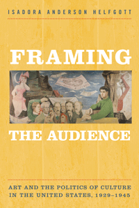

How artists, American critics, and media sought to widen the appreciation of fine art but held different views of democratic culture
How artists, American critics, and media sought to widen the appreciation of fine art but held different views of democratic culture


 How artists, American critics, and media sought to widen the appreciation of fine art but held different views of democratic culture
How artists, American critics, and media sought to widen the appreciation of fine art but held different views of democratic culture

|  |
Framing the AudienceArt�and the�Politics of�Culture in the United States, 1929-1945Isadora Anderson Helfgottpaper EAN: 978-1-43991-178-5 (ISBN: 1-4399-1178-9) |
"Framing the Audience is a very smart book. With great finesse, Isadora Helfgott approaches the complicated political and ideological shifts in the promotion and reception of an art of social content during the 1930s. She fills in the gaps in our understanding of how traveling exhibitions and inexpensive reproductions of art advanced the ideal of a �people�s art.� Her brilliant discussions and dynamic analyses of the artist Anton Refregier and the publisher of Time, Life, and Fortune, Henry Luce, clinch her arguments. This book is well argued and beautifully written."
—Patricia Hills, Professor Emerita of American and African American Art at Boston University and author of Painting Harlem Modern: The Art of Jacob Lawrence
Framing the Audience explores the cultural politics of the Great Depression and World War II through the prism of art appreciation. Isadora Helfgott interrogates the ideological and political motivations for breaking down barriers between fine art and popular culture. She charts the impact that changes in art appreciation had on the broader political, social, cultural, and artistic landscape.
Framing the Audience argues that efforts to expand the social basis of art became intertwined with�and helped shape�broader debates about national identity and the future of American political economy. Helfgott chronicles artists� efforts to influence the conditions of artistic production and display. She highlights the influence of the Federal Art Project, the impact of the Museum of Modern Art as an institutional home for modernism in America and as an organizer of traveling exhibitions, and the efforts by LIFE and Fortune magazines to integrate art education into their visual record of modern life. In doing so, Helfgott makes critical observations about the changing relationship between art and the American public.
Excerpt available at www.temple.edu/tempress
"Framing the Audience is an insightful investigation into the shifting paradigms for developing mass appreciation of the visual arts from the 1930s to the postwar era. Isadora Helfgott brings new depth of analysis to often marginalized topics in American cultural history, from the hopes of leftist artists and New Deal art administrators, to innovative exhibition and sales options for making art experiences accessible to a wider audience, to the roles of Fortune and Life magazines in merging corporate patronage, advertising, and fine arts promotion. Focusing on visual art�s relationship to its larger cultural contexts, Helfgott thoughtfully explores changing strategies for building and encouraging art�s democratic audience."
—Helen Langa, Associate Professor of Art History at American University and author of Radical Art: Printmaking and the Left in 1930s New York
"Framing the Audience poignantly demonstrates the topicality of Depression-era art and cultural debate in the United States. Rejecting dismissal of that decade as a compendium of lost or irrelevant practices and ideals disconnected from our present, Isadora Helfgott shows the decisive nature of questions of �public,� �representation,� and �power� both then and now�in not only art and criticism but also the reconstitution of the American social order. Through adept studies of artworks, critics, and cultural institutions of the day, Framing the Audience makes a valuable empirical contribution to the social history of art and New Deal�era cultural historiography as it poses questions about economic and social power in times of crisis that are as relevant today as they were during the �dirty thirties."
—Jonathan Harris, Professor in Global Art and Design Studies at Birmingham City University and author of Federal Art and National Culture: The Politics of Identity in New Deal America
"Historians will love this publication; it is a formidable piece of research and scholarship. No archive of American art went unvisited, no oral history unheard, and no obscure book or magazine from the era unread. It is, and surely will remain, a definitive source for the social history of the period for some time to come.... [I]t is a vital resource for anyone concerned with this complex era. Summing Up: Recommended."
—Choice
"Her well-researched and clearly argued monograph charts the transition from 1930s efforts to democratize art audiences to the postwar consolidation of corporate influence over American culture.... Helfgott�s major contribution to the scholarship is in exploring how a variety of institutions participated in the emergence of middlebrow culture from 1929 to 1945.... Helfgott�s excellent study of often overlooked cultural institutions explains how cultural democracy became commercialized culture."
—American Historical Review
"Framing the Audience is a deeply researched work that skillfully considers the roles that a range of public and private institutions played in spreading art and thoughtfully meditates on the consequences of corporate patronage for artists, art, industry, and social change."
—Journal of American History
"Helfgott provides a serious examination of the ways that both the artists and the various stripes of cultural leadership worked to blur, if not entirely erase, the lines between high art and popular culture.... The recognition of artists in the press, and the greater familiarity of the public with both the art on the walls and that which was found in the magazines, marked a new era in both art appreciation and the recognition of art as part of the broader American cultural landscape. In presenting this picture and conclusion to us, the author provides a study that fully engages diverse aspects of American cultural studies and has written a book that should become required reading for those interested in how the arts are part of and shape our identity."
—Journal of American Culture
"By placing a critical focus on leftist artists, the art establishment, and the corporate sector, Helfgott uncovers the story of how the makers behind 1930s visual culture deeply influenced the consumption of art.... Helfgott introduces a fresh, innovative, and thoroughly researched take on this period in American culture. The prose is well written, the arguments are persuasive, and the archival evidence is thorough. Overall, Helfgott compellingly uncovers the competing visions of how and why the audience for art was refashioned in America, showing the reader how art for 'the people' was invented and how those visions continue to be imagined today."
—InVisible: An Electronic Journal for Visual Culture
Isadora Anderson Helfgott is an Associate Professor of History at the University of Wyoming.
Art and Photography
American Studies
History
© 2016 Temple University. All Rights Reserved. This page: http://www.temple.edu/tempress/titles/2338_reg.html.